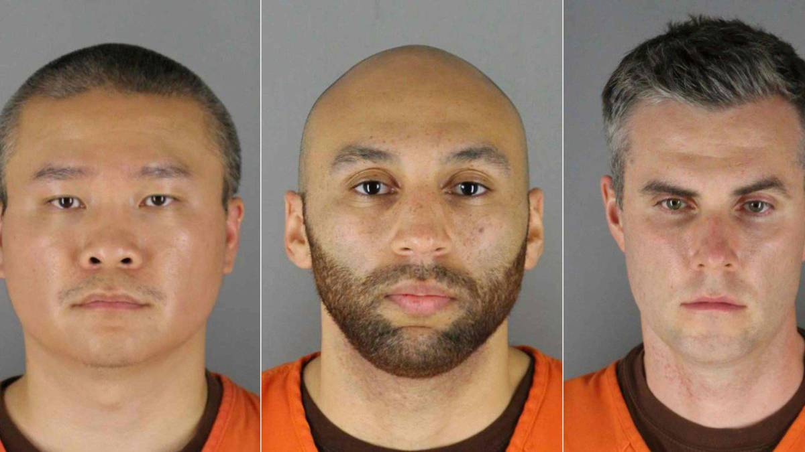
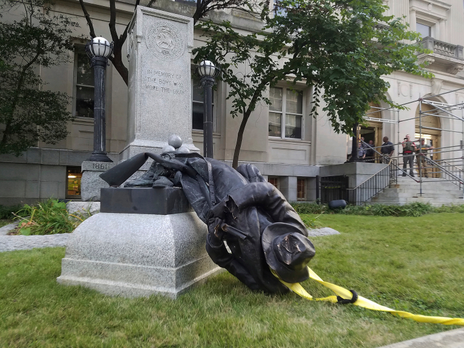

On May 25th, in Minneapolis, Minnesota, the U.S., George Floyd, a 46-year-old African American man was killed by a police officer named Derek Chauvin, who kneeled on Floyd’s neck for nearly nine minutes despite pleadings: ”I can’t breathe.”
This incident had quickly flared-up many protests around the world. Some protests are peaceful, while looting, vandalism, and fires exist in others. Police in the U.S. have been using tear gas, rubber bullets, beanbag rounds on the protesters.
Recording of George Floyd's death (This video contains violence that is unsuitable for some viewers. Viewer discretion is advised.)
Timeline
Click on events for more info.
-
George Floyd is killed
May 25
-
Protests start
May 26


-
Protests spread across the U.S.
May 27
-
The National Guard is deployed to Minneapolis
May 28
-
Derek Chauvin is charged, protests rage
May 29
-
Mayors impose curfews
May 31
-
Protests unaffected by the U.S. curfews
June 1
-
Fears over coronavirus increase as protests continue
June 2
-
Three other officers involved in Floyd's death charged
June 3
 -
First memorial planned for Floyd is held
June 4
-
Vigils held for Breonna Taylor, who was killed by white police months earlier
June 5
-
Confederate and other statues fall; Minneapolis council members announce intention to disband the police department
June 7
 -
Funeral service for George Floyd held
June 9
-
Floyd's brother calls for police reforms
June 10
-
To be continued...